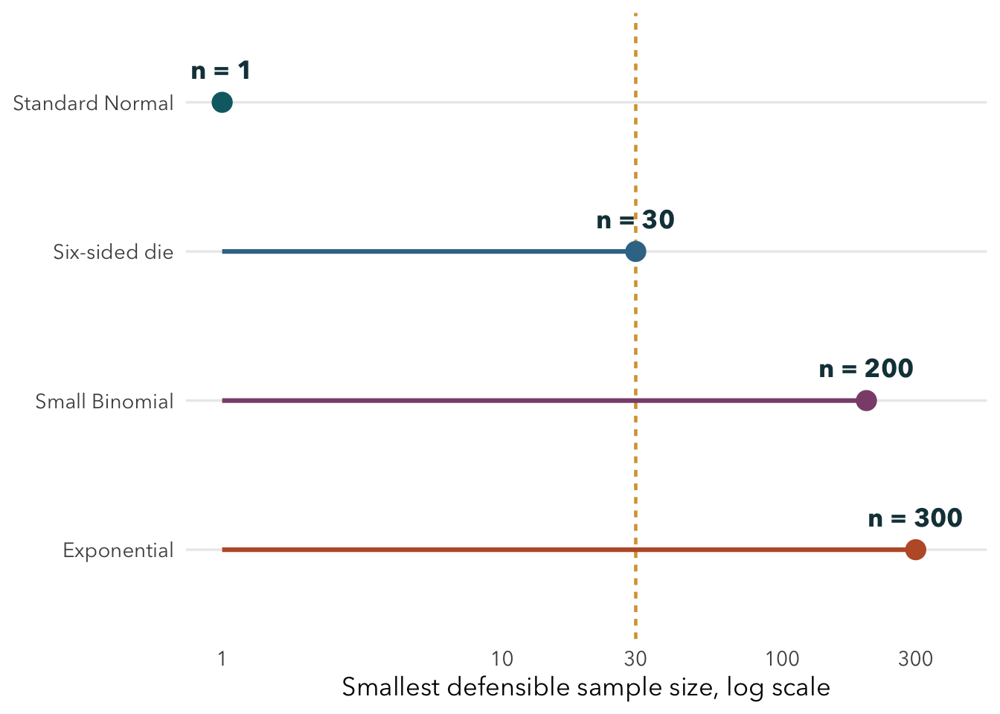

A Monte Carlo investigation of when sample means become approximately Normal
Author
Michael Hamaty
One theorem. Five very different speeds.
Five parent populations enter. Their sample means do not all approach the bell curve at the same pace, and one never does.
This project uses repeated sampling to ask a practical version of the Central Limit Theorem: how large must the sample be before a Normal approximation is genuinely useful? Each analysis begins with a prediction, checks the theorem, and then compares graphical and numerical evidence.
5 populations One shared experiment
10,000 repetitions At every sample size
Seed 631 Fully reproducible
30 to 1,000 Empirical finite-case thresholds
Research question
How does the population distribution affect the sample size required for the sampling distribution of the mean to become approximately Normal?
The broader question is when an average is trustworthy and when population shape or failed assumptions make it misleading.
Population versus sampling distribution
The population distribution describes individual observations, such as one die roll or one Exponential waiting time. The sampling distribution of the mean describes the averages produced by repeatedly drawing an entire sample of size \(n\). This project holds the population fixed within each case, repeats the sampling experiment 10,000 times, and studies the resulting 10,000 averages.
The CLT in plain language
When observations are independent, identically distributed, and have a finite mean and variance, their standardized sample mean approaches a Normal shape as \(n\) grows. The theorem does not promise that \(n=30\) is always enough, and it does not apply to the Cauchy mean. Symmetry, skewness, discreteness, and tail weight determine how useful the approximation is at finite \(n\).
Seven-step experimental protocol
Before examining final empirical conclusions, I used the same sequence for all five cases:
Establish the scientific question.
Build and verify a minimal reusable simulation.
Explore candidate diagnostics.
Experiment with visual forms.
Develop an operational evidence standard from the exploration.
Rerun the complete analysis consistently.
Verify, interpret, and render the final results.
Answer first
The parent distribution matters enormously. Standard Normal needs no waiting: \(n=1\) is exact. A symmetric die is useful by \(n=30\). The skewed small Binomial needs about \(n=200\), and a conservative Exponential threshold is \(n=1000\) after a second seed rejects the earlier \(n=300\) impression. Standard Cauchy never reaches an ordinary-CLT threshold because its sample mean remains Cauchy at every \(n\).
Show R code
thresholds <-data.frame(population =factor(c("Standard Normal", "Six-sided die", "Small Binomial", "Exponential"), levels =rev(c("Standard Normal", "Six-sided die", "Small Binomial", "Exponential", "Standard Cauchy"))),n =c(1, 30, 200, 1000),color =c("#0d6973", "#3a7697", "#8b4f79", "#bd5b32"))#ggplot2 adaptation: this annotated layer design follows the official ggplot2 reference.ggplot(thresholds, aes(n, population)) +geom_vline(xintercept =30, color ="#d8a23c", linetype ="22", linewidth =0.8) +geom_segment(aes(x =1, xend = n, yend = population, color = color), linewidth =1.1, show.legend =FALSE) +geom_point(aes(color = color), size =4.2, show.legend =FALSE) +geom_text(aes(label =paste0("n = ", n)), nudge_y =0.22, fontface ="bold", color ="#173f47") +annotate("point", x =8, y ="Standard Cauchy", shape =4, size =4.2, stroke =1.2, color ="#755b38") +annotate("text", x =10, y ="Standard Cauchy", label ="No threshold", hjust =0, fontface ="bold", color ="#173f47") +scale_color_identity() +scale_x_log10(breaks =c(1, 10, 30, 100, 300, 1000), limits =c(1, 1300)) +labs(x ="Smallest defensible sample size, log scale", y =NULL) +analysis_theme(base_size =13)

Figure 1: Smallest defensible sample sizes for the four finite-variance cases. The n = 30 marker highlights the familiar rule of thumb: it works for the symmetric die, not for the two skewed parents. Cauchy has no ordinary-CLT threshold.
The five investigations
Standard Normal: an exact reference case at every sample size.
Standard Cauchy: a stress test with no finite mean or variance.
Synthesis table
Show R code
selected <-rbind( diagnostics[diagnostics$population =="normal"& diagnostics$n ==1, ], diagnostics[diagnostics$population =="die"& diagnostics$n ==30, ], diagnostics[diagnostics$population =="binomial"& diagnostics$n ==200, ], diagnostics[diagnostics$population =="exponential"& diagnostics$n ==1000, ])synthesis <-data.frame(Population =c(selected$label, "Cauchy"),`Relevant CLT conditions`=c("Exact Normal", "IID, bounded", "IID, bounded", "IID, finite variance", "Mean and variance undefined"),`Selected n`=c(as.character(selected$n), "None"),Skewness =c(sprintf("%.3f", selected$skewness), "NA"),`Excess kurtosis`=c(sprintf("%.3f", selected$excess_kurtosis), "NA"),`SE agreement`=c(sprintf("%.2f%% error", 100* selected$relative_se_error), "NA"),Stability =c("Exact at all n", "Persists at 40 and 50", "Persists at 300 and 500", "Persists at 1500 and 2000", "Same Cauchy law at all n"),Conclusion =c("Immediate", "Fast, lattice remains", "Slow, fine lattice remains", "Slowest finite case", "Ordinary CLT ineligible"),check.names =FALSE)knitr::kable(synthesis, row.names =FALSE)
Table 1: Cross-population decisions from the completed simulation. Shape metrics and SE agreement refer to the selected point; Cauchy entries are unavailable by theory.
Population
Relevant CLT conditions
Selected n
Skewness
Excess kurtosis
SE agreement
Stability
Conclusion
Normal
Exact Normal
1
-0.024
0.004
0.42% error
Exact at all n
Immediate
Die
IID, bounded
30
-0.006
-0.069
1.07% error
Persists at 40 and 50
Fast, lattice remains
Small Binomial
IID, bounded
200
0.062
-0.042
0.28% error
Persists at 300 and 500
Slow, fine lattice remains
Exponential
IID, finite variance
1000
0.066
-0.035
0.89% error
Persists at 1500 and 2000
Slowest finite case
Cauchy
Mean and variance undefined
None
NA
NA
NA
Same Cauchy law at all n
Ordinary CLT ineligible
The convergence ordering is Normal, die, small Binomial, then Exponential. Cauchy is not merely slower: it is ineligible.
What each diagnostic contributed
Center: all finite-variance cases centered correctly well before their shapes were convincing.
Standard error: the theoretical \(\sigma/\sqrt{n}\) relationship worked early and did not by itself certify Normality.
Skewness: this separated the symmetric die from the two asymmetric parents.
Excess kurtosis: this exposed tail and peak differences that skewness could miss.
Q-Q RMSE: this was the strictest diagnostic, especially for discrete lattices.
Plots: these determined whether the remaining numerical departure would materially mislead a Normal approximation.
Evidence standard
The final decision does not come from a single score. Center, standard error, skewness, excess kurtosis, a Q-Q discrepancy, and the plots each answer a different question. Numerical bands are calibrated against the finite simulation noise in the Normal case. A conclusion must also persist for the next two larger evaluated sample sizes.
NoteWhy n = 30 is not a law
At \(n=30\), the die is defensible, Exponential still shows substantial right-tail curvature, and the small Binomial remains skewed and visibly discrete. Sample size cannot be judged apart from the parent shape and the intended use of the approximation.
Reproducibility and limits
All final results use seed 631 and 10,000 repetitions per sample size. The borderline Exponential conclusion was repeated with seed 1631; that run rejected the first impression at 300 and motivated the conservative 1000 threshold. The simulations cannot prove a universal threshold, and tail-sensitive applications may require larger samples than the practical whole-distribution judgments here.